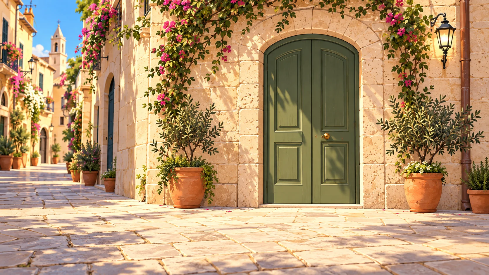

Web concierge · Accesso ospiteLa tua porta
Autorizzazione attiva per il soggiorno
Apri la porta
Un soggiorno smart · BNBReadyIl giorno dell’arrivo
Check-in più flessibile
Un soggiorno smartLa chiave è nella loro pagina ospite.

